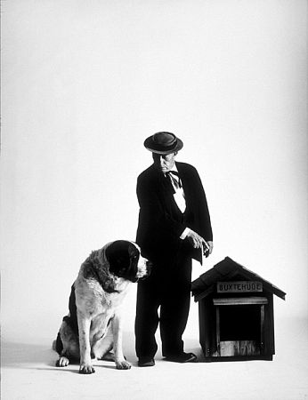

Dos hombres, ambos muy enfermos, ocupaban la misma habitación de un hospital.
A uno se le permitía sentarse en su cama cada tarde, durante una hora, para ayudarle a drenar el líquido de sus pulmones. Su cama daba a la única ventana de la habitación. El otro hombre tenia que estar todo el tiempo boca arriba. Los dos charlaban durante horas. Hablaban de sus mujeres y sus familias, sus hogares, sus trabajos, su estancia en el servicio militar, donde habían estado de vacaciones. Y cada tarde, cuando el hombre de la cama junto a la ventana podía sentarse, pasaba el tiempo describiendo a su vecino todas las cosas que podía ver desde la ventana.

El hombre de la otra cama empezó a desear que llegaran esas horas, en que su mundo se ensanchaba y cobraba vida con todas las actividades, colores del mundo exterior. La ventana daba a un parque con un precioso lago. Patos y cisnes jugaban en el agua, mientras los niños lo hacían con sus cometas. Los jóvenes enamorados paseaban de la mano, entre flores de todos los colores del arco iris. Grandes árboles adornaban el paisaje, y se podía ver en la distancia una bella vista de la línea de la ciudad.
El hombre de la ventana describía todo esto con un detalle exquisito, el del otro lado de la habitación cerraba los ojos e imaginaba la idílica escena.
Una tarde calurosa, el hombre de la ventana describió un desfile que estaba pasando. Aunque el otro hombre no podía oír a la banda, podía verlo, con los ojos de su mente, exactamente como lo describía el hombre de la ventana con sus mágicas palabras.
Pasaron días y semanas. Una mañana, la enfermera de día entró con el agua para bañarles, encontrándose el cuerpo sin vida del hombre de la ventana, que había muerto plácidamente mientras dormía. Se llenó de pesar y llamó a los ayudantes del hospital, para llevarse el cuerpo.
Tan pronto como lo consideró apropiado, el otro hombre pidió ser trasladado a la cama al lado de la ventana. La enfermera le cambió encantada y, tras asegurarse de que estaba cómodo, salió de la habitación.
Lentamente, y con dificultad, el hombre se irguió sobre el codo, para lanzar su primera mirada al mundo exterior; por fin tendría la alegría de verlo el mismo. Se esforzó para girarse despacio y mirar por la ventana al lado de la cama... y se encontró con una pared blanca.
El hombre preguntó a la enfermera que podría haber motivado a su compañero muerto para describir cosas tan maravillosas a través de la ventana. La enfermera le dijo que el hombre era ciego y que no habría podido ver ni la pared, y le indico: "Quizás sólo quería animarle a usted"
Epilogo: Es una tremenda felicidad el hacer felices a los demás, sea cual sea la propia situación. El dolor compartido es la mitad de pena, pero la felicidad, cuando se comparte, es doble. Si quiere sentirse rico, solo cuente todas las cosas que tiene y que el dinero no puede comprar. "Hoy es un regalo, por eso se le llama el presente"
El origen de esta carta es desconocido, pero trae buena suerte a todo el que la transmite. No guardes esta carta.
No mandes dinero. Solamente envíala a cinco o más amigos a quienes desees buena suerte. Veras como algo bueno te ocurre
cuatro días después de hoy.